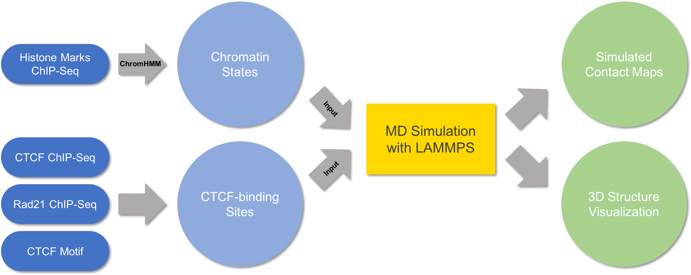

Overview
My Ph.D. research lies in massive cross-disciplanry fields from computational Biophysics to theoretical Chemistry. By developing novel theoretical and computational models, we aim to bring together statistical modeling, molecular simulations, and bioinformatics analysis to provide a high-resolution characterization of the three-dimensional genome organization, to unravel the molecular mechanisms that dictate its setup, and to elucidate its impact on regulating gene expression and establishing cell fate.
Papers
*Equal Contribution
Yifeng Qi, Bin Zhang. Predicting three-dimensional genome organization with chromatin states. PLoS Computational Biology. 15.6 (2019): e1007024. [pdf] [journal] [code] [BibTeX]
Yifeng Qi, Alejandro Reyes, Sarah E. Johnstone, Martin J. Aryee, Bradley E. Bernstein and Bin Zhang. Data-driven polymer model for mechanistic exploration of diploid genome organization. Biophysical Journal. In press [pdf] [journal] [code] [BibTeX]
Sarah E. Johnstone*, Alejandro Reyes*, Yifeng Qi, Esmat Hegazi, Karin Pelka, Jonathan Chen, Luli Zou, Yotam Drier, Vivian Hecht, Noam Shoresh, Caleb Lareau, Sowmya Iyer, Nir Hacohen, Rafael Irizarry, Bin Zhang, Martin J. Aryee, Bradley E. Bernstein. Large-Scale Topological Changes Restrain Malignant Progression in Colorectal Cancer Cell. 182.6 (2020): 1474-1489. [pdf] [journal] [BibTeX]
Wenjun Xie, Yifeng Qi, Bin Zhang. Characterizing chromatin folding coordinate and landscape with deep learning. PLoS Computational Biology. 16.9 (2020): e1008262. [pdf] [journal] [code] [BibTeX]
Liangqi Xie, Peng Dong, Xingqi Chen, Tsung-Han S. Hsieh, Sambashiva Banala, Margherita De Marzio, Brian P. English, Yifeng Qi, Seol Kyoung Jung, Kyong-Rim Kieffer-Kwon, Wesley R. Legant, Anders S. Hansen, Anton Schulmann, Rafael Casellas, Bin Zhang, Eric Betzig, Luke D. Lavis, Howard Y. Chang, Robert Tjian, Zhe Liu. 3D ATAC-PALM: super-resolution imaging of the accessible genome Nature Methods. 17.4 (2020): 430-436. [pdf] [journal] [BibTeX]
Tao Chen, Sheng Chen, Yuwei Zhang, Yifeng Qi, Yuzhou Zhao, Weilin Xu, Jie Zeng. Catalytic Kinetics of Different Types of Surface Atoms on Shaped Pd Nanocrystals. Angewandte Chemie International Edition. 55 (2016): 1839-1843. [pdf] [journal] [BibTeX]
Zhaowei Chu, Lei Gu, Yeguang Hu, Xiaoyang Zhang, Man Li, Jiajia Chen, Da Teng, Man Huang, Che-Hung Shen, Li Cai, Yifeng Qi, Songmei Geng, Dennie T. Frederick, Emma Specht, Adriano Piris, Ryan J. Sullivan, Keith T. Flaherty, Genevieve Marie Boland, Katia Georgopoulos, David Liu, Yang Shi, Bin Zheng Cohesin protein STAG2 regulates interferon signaling in melanoma via enhancer loop reprogramming Submitted.
Liangqi Xie*, Peng Dong*, Yifeng Qi, Margherita De Marzio, Xingqi Chen, Sambashiva Banala, Wesley R Legant, Brian P English, Anders S Hansen, Anton Schulmann, Luke D Lavis, Eric Betzig, Rafael Casellas, Howard Y Chang, Bin Zhang, Robert Tjian, Zhe Liu Super-resolution Imaging Reveals 3D Structure and Organizing Mechanism of Accessible Chromatin. Submitted. [pdf] [bioRxiv] [BibTeX]
Yifeng Qi, Bin Zhang. Exploring the free energy landscape of nucleolar coalescence in human cell nucleus. In preparation.
Xingcheng Lin*, Yifeng Qi*, Andrew Latham, Bin Zhang. Learning mechanisms of genome folding with maximum entropy optimization. In preparation.
Presentations
06/2020 NSF-funded Genome Architecture and Function Workshop, US nationwide virtual.
02/2020 The Biophysics Society (BPS) Annual Meeting, San Diego CA.
10/2019 MIT Biophysics Retreat, Cape Code MA.
10/2019 Annual Greater Boston Area Statistical Mechanics Meeting, Brandeis University.
10/2019 Molecular Biophysics in the Northeast Meeting, Northeastern University.
03/2019 Models, Inference & Algorithms (MIA) Seminar, Broad Institute. [video]
01/2019 Gordon Research Conference-Stochastic Physics in Biology, Ventura CA.
10/2018 Annual Greater Boston Area Statistical Mechanics Meeting, Brandeis University.
10/2018 MIT Biophysics Retreat, Cape Code MA.
03/2018 Keystone Symposia-Chromatin Architecture and Chromosome Organization, Whistler Canada.
10/2017 Annual Greater Boston Area Statistical Mechanics Meeting, MIT.
Software
DRAGON: De novo, and RAtional prediction of Genome organizatiON. [Github]
